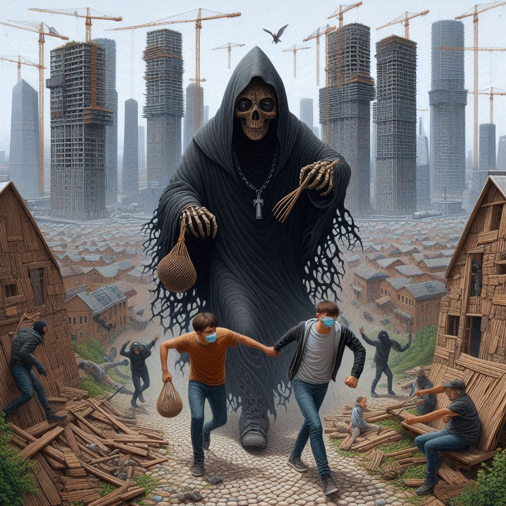

채식주의자
목차
작가
한 강
출판일
2007년
감상평에 대한 AI그림
자해, 동물 학대, 불륜 등 불편한 주제 를 μ§μ„¤μ μ΄κ³ 잘 λ‚λΌν• 표현으로 담아낸 작품.
불편한 주제 를 회피하지 않고 λλ ¤ 잘 λ‚λΌν•κ² 드러낸 것이 κ°•λ ¬ν• 인상을 주었다.
사회 규범으로 포장되어 우리가 눈 감아 온 일상 속 'νλ ¥'에 대한 잘 €ν•μ„ 직시하게 되어 복잡한 생각이 λ“ λ‹¤.

감상평에 대한 AI평가
✨ 작품이 다루는 불편한 주제 (자해, 동물 학대, 불륜)를 명확히 짚었고 , 그것이 독자에게 어떤 영향을 미치는지 설명했어. 사회적 νλ ¥μ— 대한 잘 €ν•μ΄λΌλ” 핵심 메시지도 잘 파악한 잘 μ΄ 좋아.
✨ 단순한 감상이 아니라, 책이 주는 불편함을 통해 ‘사회적 νλ ¥β€™μ΄λΌλ” 더 큰 λ¬Έμ 를 κ³ λ―Όν•κ² 되었다는 잘 μ΄ μΈμƒμ μ΄μ•Ό. κ°μ •μ„ 솔직하게 담아낸 잘 μ΄ 감상평의 깊이를 더해줘.
작품의 핵심 주제 를 잘 파악했고 , κ°μΈμ μΈ 해석도 명확하지만, 문장을 조금 더 잘 •μ ν•λ©΄ 가독성이 좋아질 것 같아. 😊